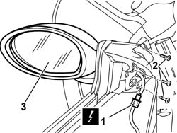

7005R30 ELECTRICALLY CONTROLLED DOOR MIRROR (ONE) - R+R
- Path
- Procedures > 70 FITTINGS > 7005 PASSENGER COMPARTMENT FRONT SIDE DOORS > 7005R FRONT DOOR MIRRORS > 7005R30 ELECTRICALLY CONTROLLED DOOR MIRROR (ONE) - R+R
- Kind
- repair procedure (removal / refitting; the operation number is the code)
- Applies to
- all engines; all production periods
- Interactive page
- https://sloeber94.github.io/elrnDB-aGt/en/#/125001801
Applies to: all engines; all production periods
 Removing
Removing
 Refitting
RefittingOp. 7005E12 CORNER COVER OF ONE FRONT SIDE DOOR, LH OR RH R R
1. Disconnect the electrical connections for the door mirror.
Name | Connector | |
|---|---|---|
1 | Driver's external rear view mirror | See P60 LEFT DOOR MIRROR |
Name | Connector | |
|---|---|---|
1 | Exterior passenger side rear view mirror | See P61 RIGHT DOOR MIRROR |
2. Undo the bolts securing the door mirror.
3. Remove the door mirror.

Applies to: all engines; all production periods
Refitting
RemovingCheck that the door mirror is not damaged.
Fit the rear view mirror taking care to fit the mirror tab underneath the edge of the triangular seal.
Secure the mirror using the bolts.
 | Fastening | Component | Ø | Value (daNm) |
|---|---|---|---|---|
- | Bolt | ELECTRIC DOOR MIRROR | M6 | 085 |
Connect the electrical connection.
Name | Connector | |
|---|---|---|
- | Driver's external rear view mirror | See P60 LEFT DOOR MIRROR |
Name | Connector | |
|---|---|---|
- | Exterior passenger side rear view mirror | See P61 RIGHT DOOR MIRROR |
Check that the door mirror is working properly.
Op. 7005E12 CORNER COVER OF ONE FRONT SIDE DOOR, LH OR RH R R
Topics linked from this page (1)
Topics that link to this page (7)
- T01 WIND NOISE FROM THE FRONT DOORS
- 5010D12 OUTSIDE AIR TEMPERATURE SENSOR ON DOOR MIRROR - R+R FOLLOWING ELECTRICAL CIRCUIT CHECK
- 7005D33 CHANNEL OF DOOR DESCENDING GLASS INNER GUIDE (ONE) LH OR RH ON FRONT SIDE DOOR - R R
- 7005R35 DOOR MIRROR REFLECTOR - R R
- 7005R36 DOOR MIRROR MOTOR - R R
- 7005R37 DOOR MIRROR BOOT - R R
- 7205E36 STRIPPING FRONT SIDE DOOR